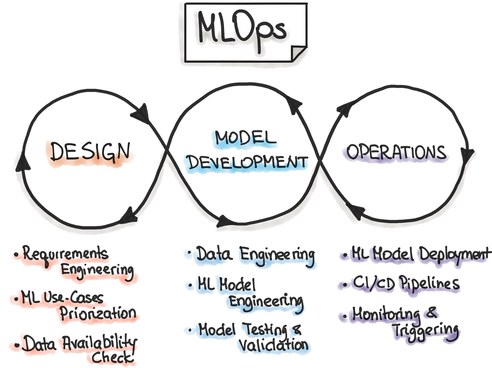

Despliegue & Monitorización
Una vez entrenado, un modelo de machine learning necesita llegar al mundo real. El despliegue y la monitorización aseguran que funcione correctamente en producción, detectando errores, midiendo su rendimiento y manteniéndolo actualizado con el tiempo.

MLOps: del laboratorio a producción
MLOps conecta el desarrollo de modelos de machine learning con su puesta en producción. Combina ciencia de datos, ingeniería y DevOps para que los modelos funcionen de forma estable, escalable y monitoreada en entornos reales.

Leibniz y el cálculo lógico
Gottfried Wilhelm Leibniz soñó con crear una “máquina de razonamiento” que pudiera realizar deducciones lógicas, anticipando la noción de una computadora simbólica.

George Boole y el álgebra booleana
Boole formalizó la lógica con operaciones matemáticas que más tarde permitirían el desarrollo de circuitos digitales y lenguajes de programación.

Alan Turing y las bases de la computación
Turing propuso la idea de una máquina capaz de ejecutar cualquier proceso lógico. Su modelo teórico marcó el inicio del pensamiento algorítmico que haría posible la IA.
“Podemos considerar que el razonamiento es una forma de cálculo.” — Leibniz